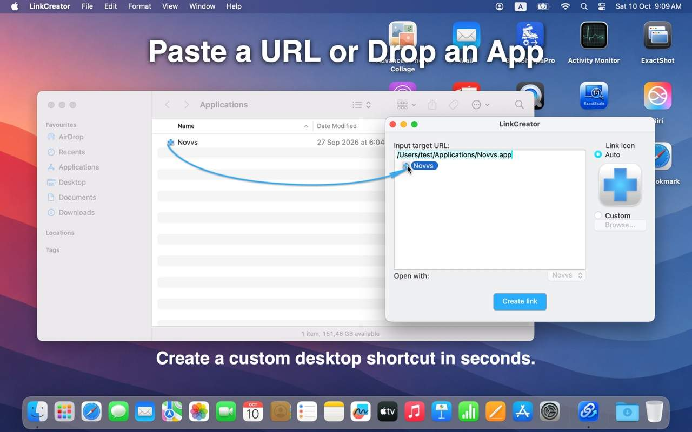
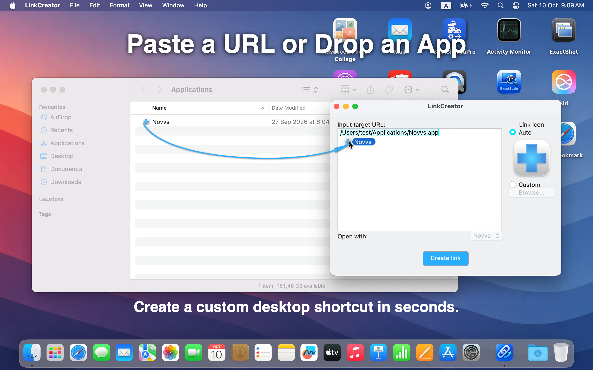
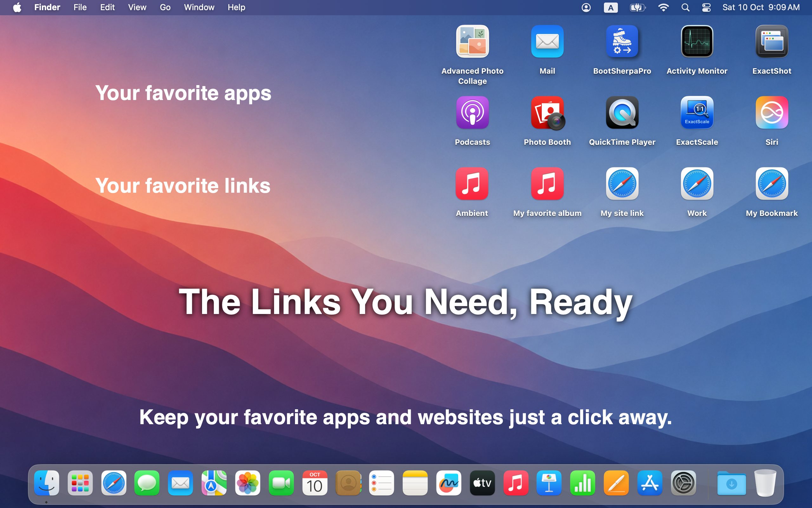
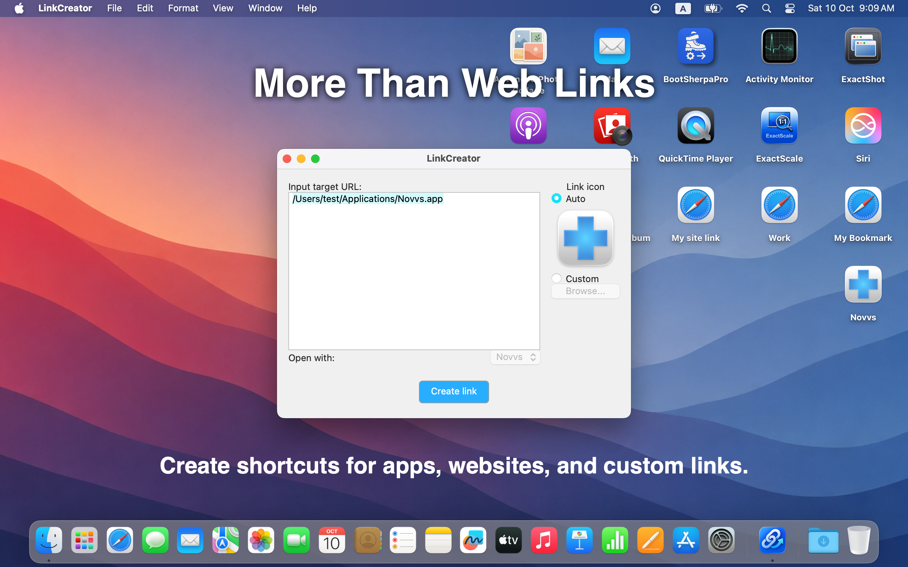

Paste a URL or drop an app.
Create a custom desktop shortcut in seconds. Link Creator detects apps that can handle the URL, uses the app’s own icon when it fits, and lets you choose where to save the link.


Keep your favorite apps and websites just a click away. Create macOS Internet Location shortcuts from URLs — and open them in the right app.

Create a custom desktop shortcut in seconds. Link Creator detects apps that can handle the URL, uses the app’s own icon when it fits, and lets you choose where to save the link.


Create shortcuts for apps, websites, and custom links. When a supported app has its own URL scheme, Link Creator can convert a Universal Link into an app-specific link so macOS opens it in the right application — for example, an App Store page in the App Store instead of the browser.

Available on the Mac App Store. Requires macOS 10.12 or later.